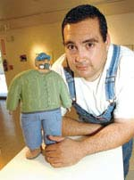
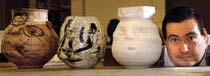
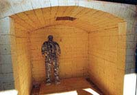

|
Shaping
the past into clay |
|
 |
|
Potter/Artist Professor, Angel Luna. Photo by Terry Ketron |
Angel Luna grows
his art in the ground, pulling images from deep within the mud
— where the stories are.
Luna's history with the ground reaches far into his past.
It was the soil that shaped the former farm worker's teenage hands
into tools perfect for art, made agile and quick by years of tending
apples and grapes. Today it's the soil that Luna shapes into clay
figures, images of himself inspired by those years spent in stooped
labor that he hopes will not only educate folks, but amuse them
a bit as well.
Yes, even though his exhibitions can sometimes carry such heavy
titles like "On the Dangers of Pesticides," Luna still
looks for a chance to earn some smiles, too.
"A lot of my work I feel has to have some humor in it,"
he said, smiling himself. "When my grandfather saw the pieces
on pesticides he laughed. He got it and hopefully everyone else
did, too."
Today Luna shares his artistic vision as a professor at Arizona
Western College. He's been teaching there for about 10 months
now, having picked AWC because it's small and its services are
very personal, almost like the atmosphere of a private school,
he said.
"Students at AWC have to work really hard to get lost or
slip through the cracks here," he said. "This school
is student-focused and so am I."
Luna's clay pieces inspired by his years in the fields have earned
him a fast and strong reputation at AWC. He's also stirring things
up in a good way by starting a claywork art club and planning
a major clay art sale coming up.
Luna's tale of how he ended up becoming an artist is certainly
one of contrasts. In fact, he said that a reoccurring theme in
his work is the concept of "dos mundos" or "two
worlds."
"I sure didn't think I would end up here, doing this,"
said Luna.
|
 |
|
Luna poses with three of his "cabazones" (fatheads), the term of endearment he uses for his "facelike" pottery. Photo by Terry Ketron |
He grew up in
a the Yakima Valley area of Washington state. His parents had
both worked as migrant field workers before settling down to start
their family. They still worked in the fields, but kept to one
family of farms.
"I was always out in the fields as a child with my mom,"
Luna said, adding with a chuckle. "That was day care."
Luna added that not only was taking children into the fields a
practical reality for two working parents, he also thinks there
was another factor involved.
"I think they partly did it to scare us. They put us out
there because they wanted us to know what real, honest labor is,
that nobody is going to hand you anything."
He didn't start officially working in the fields until around
age 14, when summer months meant 10-hour days, six days a week.
During college he worked during holidays and breaks as a way to
pay for his books.
"I really started working once it was technically legal for
me to work, even though some family has worked a lot longer,"
he said, adding that field work was certainly full of its share
of grim realities. "You can ruin your back, for one. There
are accidents, too. We know plenty of people who are missing parts
from their bodies."
But, like with anything in life, work in the fields brought Luna
its share of fulfillment, too.
"I learned how to work with my hands. That's the reason I
work with clay. Plus you learn the ability to solve problems with
your hands," Luna said. "Then there's also a sense of
accomplishment when the crops come in. I always liked that."
Luna's artistic expression back then was pretty limited. His schools
didn't focus on art much and he didn't sculpt or paint as a young
man.
"Artwise I never thought of myself as an artist. Growing
up my mom would always tell me to keep creative, keep my imagination
alive," he said. "So I read a lot and wrote, too."
He also played in the high school band, having chosen the French
horn simply because other instruments were expensive and he could
get a horn for free.
|
 |
|
One of Luna's "gente" (people) sculptures waits in the kiln for enough other pieces so it can be fired. Photo by Terry Ketron |
After high school Luna's plans ranged from
thoughts of going into the military to becoming a teacher. He
eventually went on to earn a history degree and fine arts degree
from a college in Washington, then a master's degree in studio
arts from the University of Idaho.
He was the first college graduate in his family, which has since
produced several more academics as each person encourages the
rest of his or her cousins.
Surprisingly, he actually got into art because he signed up for
one of those pesky, mandatory humanities classes — a ceramics
class.
Luna later went on to study under a nationally celebrated sculptor
and brushmaker. He also got his first taste of teaching thanks
to his job prior to Yuma, teaching as an adjunct professor. He
lectured before classes of up to 270 students and oversaw five
teaching assistants.
For Luna, going into teaching was an obvious decision.
"A lot of my family is involved in service in some way, which
I think is very interesting. I think we have a feeling of responsibility
toward this country we've come to because we've had all these
opportunities, all these open doors."
Luna also figures that he owes quite a bit to all the educators
who shaped his own destiny.
"I'm a final project from all the energy from all these different
people. Mentally I can think back and see where I could have taken
all these different routes if people haven't helped me or pushed
me in a direction I would never have expected," he said.
"I'm just grateful for the chance to pay those people back
by working with students of my own."